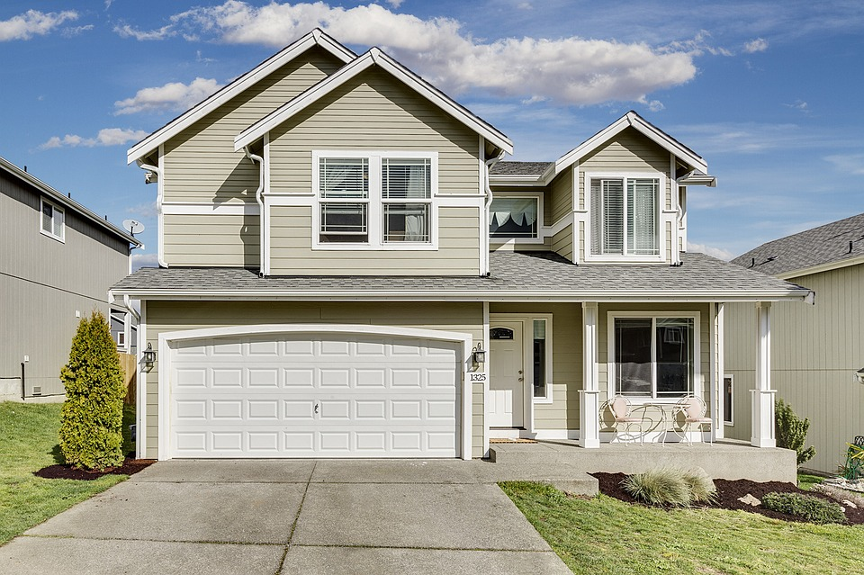

Welcome to The Dunbar Project Website
Dunbar School was completed in January 1918, for the purpose of educating Tucson's African-American students. The school was named after Paul Laurence Dunbar, a renowned African-American poet. African-American children in first through ninth grades attended Dunbar until 1951, when de jure segregation was eliminated from the school systems of Arizona. When segregation in Arizona was eliminated, Dunbar School became the non-segregated John Spring Junior High School, and continued as such until 1978 when the school was closed permanently.